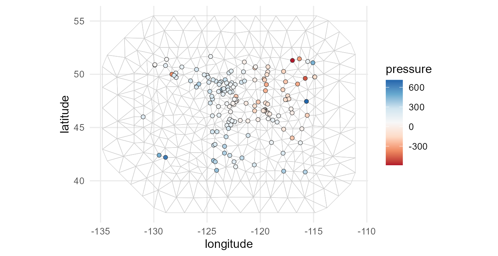
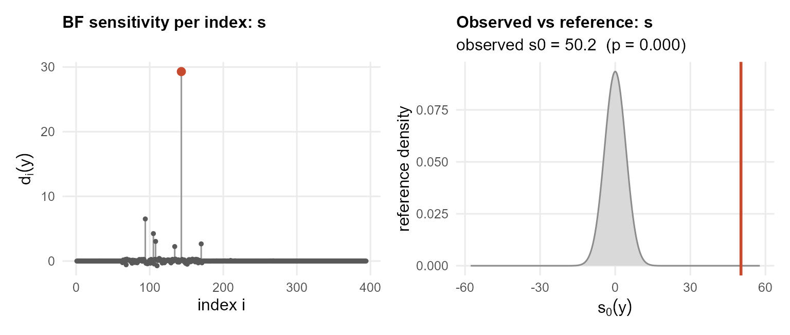
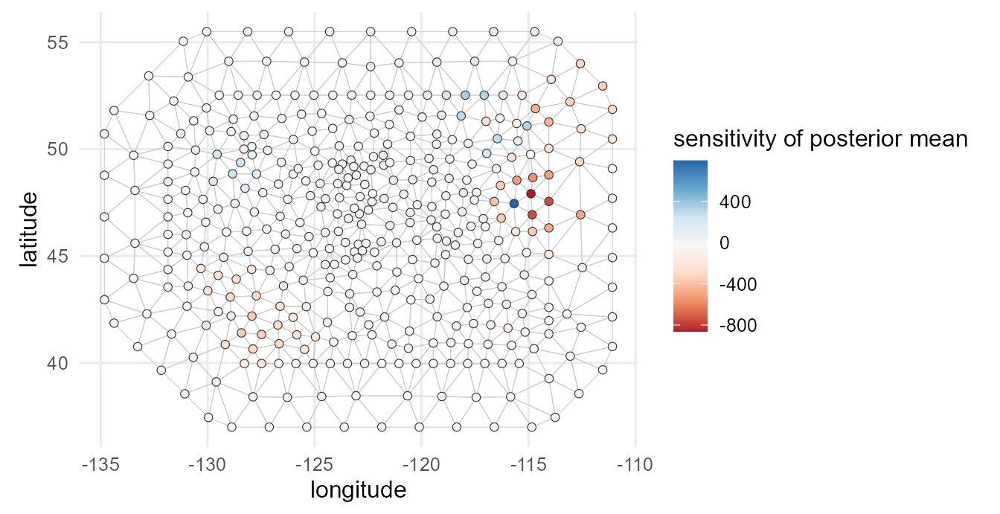
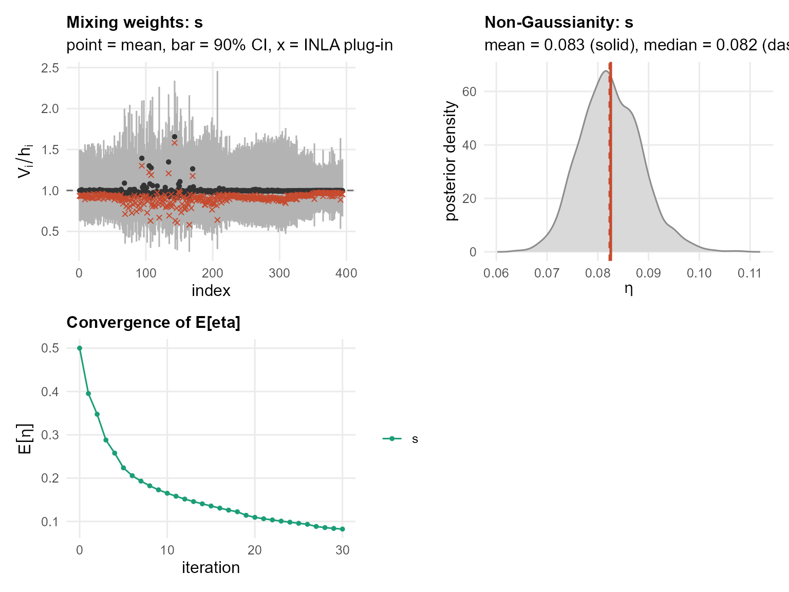
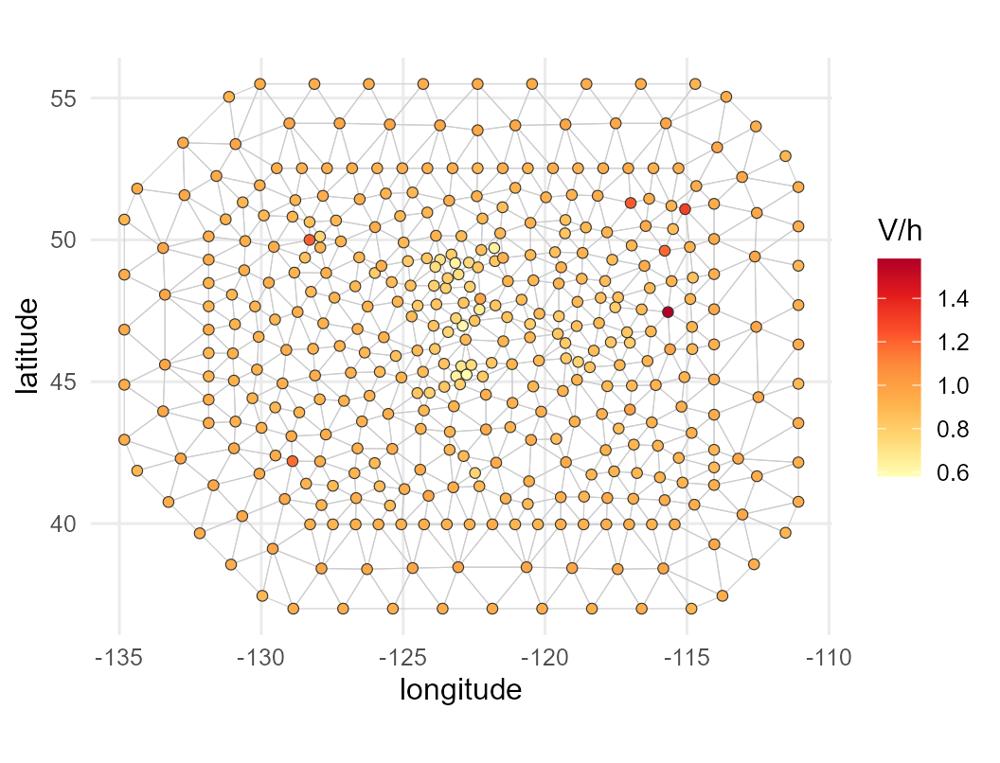
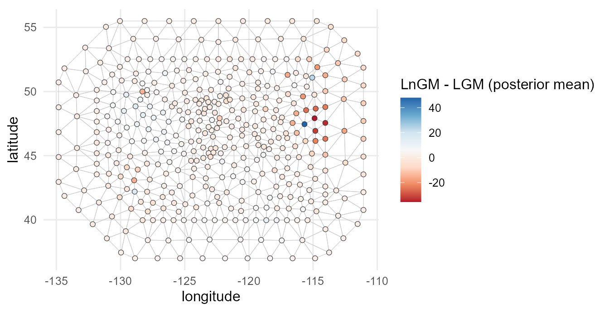

Geostatistical data: a Matern (SPDE) field
Source:vignettes/articles/geostatistical.Rmd
geostatistical.Rmdweatherdata, bundled with the package, holds pressure
readings across the Pacific Northwest. Build the mesh first and plot the
stations over it:
w <- read.csv(system.file("extdata", "weatherdata.csv", package = "ngvb"))
mesh <- inla.mesh.2d(loc = w[, c("lon", "lat")], max.edge = c(1.5, 2.5),
cutoff = 0.3, max.n.strict = 400)
geo.plot(w[, c("lon", "lat", "press")], mesh = mesh, title = "pressure",
palette = "RdBu")
We model pressure as a continuous Matern field through the SPDE
approach, the standard tool for point-referenced spatial data. The field
solves a stochastic PDE whose finite-element form gives the operator
,
where
and
are the mass and stiffness matrices of the mesh. A Gaussian Matern
smooths the whole surface uniformly, while the non-Gaussian version lets
a few locations depart more sharply. ngvb reads
straight from the fitted spde object, so you pass nothing
extra.
spde <- inla.spde2.pcmatern(mesh, alpha = 2,
prior.range = c(1, 0.5), # P(range < 1) = 0.5
prior.sigma = c(10, 0.1)) # P(sigma > 1) = 0.01
A <- inla.spde.make.A(mesh, loc = as.matrix(w[, c("lon", "lat")]))
stk <- inla.stack(tag = "est", data = list(y = w$press), A = list(A),
effects = list(s = 1:spde$n.spde))
LGM <- inla(y ~ -1 + f(s, model = spde), data = inla.stack.data(stk),
control.predictor = list(A = inla.stack.A(stk)),
control.compute = list(config = TRUE))
chk <- ng.check(LGM, compute.random = TRUE)
ng.check()’s diagnostic
above is one instance of a more general result (Theorem 2 of Cabral,
Bolin & Rue, JRSS-B 2025): the sensitivity of any
posterior summary to relaxing Gaussianity is a covariance, computable
entirely from the Gaussian fit, without ever running
ngvb(). Two instances are built in: the sensitivity of a
covariate’s coefficient (chk$sens.fixed, one column per
fixed effect) and the sensitivity of the latent field’s own posterior
mean at every node (chk$sens.random$s, available because
ng.check() was called with
compute.random = TRUE above). So before ever fitting the
non-Gaussian model, we can already map where its predictions are
expected to move the most:
nodes.sens <- data.frame(lon = mesh$loc[, 1], lat = mesh$loc[, 2], sens = chk$sens.random$s)
geo.plot(nodes.sens, mesh = mesh, title = "sensitivity of posterior mean", palette = "RdBu")
This map is computed entirely from the Gaussian fit above;
ngvb() has not run yet. We can tell which regions our
spatial predictions will change the most, and also the direction. Blue
means that the posterior mean of the latent field will take larger
values once we fit the non-Gaussian model.
LnGM <- ngvb(LGM)
#> Components: s [spde]
#> ngvb: reached the iteration limit after 30 iteration(s); E[eta] = 0.083
plot(LnGM)
The mixing variables live on the mesh nodes, so we can map them back over space. We plot the ratio , which is one where the field is Gaussian and larger where it departs from a uniform Matern (for the SPDE the weights are the mesh mass, so rather than is the quantity to look at):
nodes <- data.frame(lon = mesh$loc[, 1], lat = mesh$loc[, 2],
Vh = LnGM$V$s / LnGM$h$s)
geo.plot(nodes, mesh = mesh, title = "V/h")
samples <- ngvb_sample(LnGM, n.samples = 30, seed = 1)
bayes.factor(samples)
#> Bayes factor (non-Gaussian vs Gaussian): 33.2
#> log10 BF = 1.52 (strong)
#> weight ESS = 17.8 of 30 drawsngvb_sample() also pools the latent field itself through
summary(samples, what = "random"), so we can now compare
the sensitivity preview above against the actual before/after change in
the posterior mean:
post <- summary(samples, verbose = FALSE)
diff <- post$random$s$mean - LGM$summary.random$s$mean
nodes.diff <- data.frame(lon = mesh$loc[, 1], lat = mesh$loc[, 2], diff = diff)
geo.plot(nodes.diff, mesh = mesh, title = "LnGM - LGM (posterior mean)", palette = "RdBu")
The two maps pick out the same location. The sensitivity preview correlates with the actual change in magnitude, and among the handful of nodes it flags as most sensitive the direction agrees too:
cat(sprintf("correlation(sensitivity, actual change) = %.2f\n",
cor(chk$sens.random$s, diff)))
#> correlation(sensitivity, actual change) = 0.76
top10 <- order(-abs(chk$sens.random$s))[1:20]
cat(sprintf("sign agreement among the 20 most sensitive nodes: %.0f%%\n",
100 * mean(sign(chk$sens.random$s[top10]) == sign(diff[top10]))))
#> sign agreement among the 20 most sensitive nodes: 100%